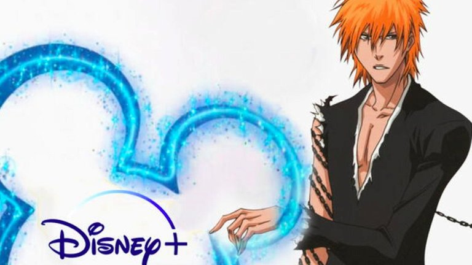
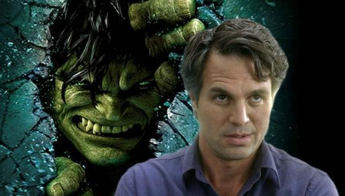

18 de octubre del 2022
HUNTER x HUNTER ya tiene fecha de estreno de sus nuevos episodios
El manga de HUNTER x HUNTER ha estado en pausa desde 2018, cuando el creador Yoshihiro Togashio se tomó un descanso debido a problemas relacionados con la salud, mismos que han retrasado el lanzamiento durante varias épocas, es bien sabido que Togashio ya no puede trabajar si no está acostado y con un gran soporte. En mayo, creó una cuenta de Twitter para compartir actualizaciones sobre su trabajo, anunciando el regreso de la serie.

18 de octubre del 2022
Disney + tiene el peor estreno posible con Bleach: Thousand-Year Blood War
Bleach: Thousand-Year Blood War se ha convertido en una de las series más exitosas de anime, sin embargo Disney no ha sabido aprovechar esto y se ha convertido en su más grande fracaso. Ahora que sabemos que la empresa posee los derechos de transmisión para México, España y Latinoamérica, pero que no los usará, bloqueando cualquier forma legal de verla.

18 de octubre del 2022
Marvel da a conocer el reemplazo de Hulk en el UCM y no es quien crees
Con la llegada de She-Hulk al UCM muchos llegarían a pensar que sería ella quien reemplace al humanoide verde, pero la verdad es que no, no será ella quien lo reemplace.
A pesar de que ambos cuentan con los mismos poderes y características físicas, su proceso de aceptación fue total y absolutamente diferente, incluso, uno de los dos resulta ser más fuerte que el otro. Por un lado, Hulk y Bruce Banner se aborrecían el uno al otro, mientras que Jennifer Walters aceptó a She-Hulk bastante rápido.
A Bruce Banner le costó mucho aprender a controlar su ira y sus poderes como Hulk, mientras que a Jennifer Walters no se le dificultó tanto esa tarea y rápidamente logra controlar sus habilidades como She-Hulk.
18 de octubre del 2022
One Piece hace una versión femenina de Law totalmente canon y así es como luce
Durante este asedio Doc Q, uno de los integrantes de la tripulación de Barbanegra ha hecho uso de las habilidades que le otorga su Shiki Shiki no Mi, que le permite controlar y atacar con enfermedades a sus oponentes, ocasionándole a Law y sus nakama la “Enfermedad de Feminización”, realizándoles un cambio de género a todos.
En esta imagen se puede observar cómo luce Trafalgar D. Water Law en su versión femenina, realizada por el mismo Oda.